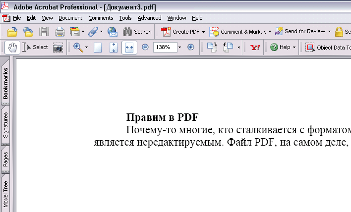
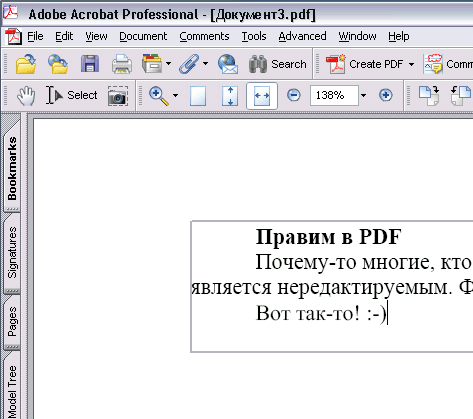

Редактируемый PDF
20.10.2008
Почему-то многие, кто сталкивается с форматом PDF, уверены, что этот формат является нередактируемым. Файл PDF, на самом деле, является редактируемым.


Для этого надо просто воспользоваться нужными шрифтами. Эти шрифты «со смещенной кодовой таблицей». Честно говоря, я пока что создал всего 1 шрифт, и тот ГОСТовский, и всех терминов не знаю. Так вот, для двух шрифтов, самых распространённых (Times New Roman и Arial) я и создал данные шрифты. В списке шрифтов они называются AA_Times и AA_Arial. Чтобы можно было быстро найти.
Устанавливаете в систему эти шрифты, в Акробате отмечаете их внедрение и в последствии пишете с их помощью в Акробате.
Скачать: